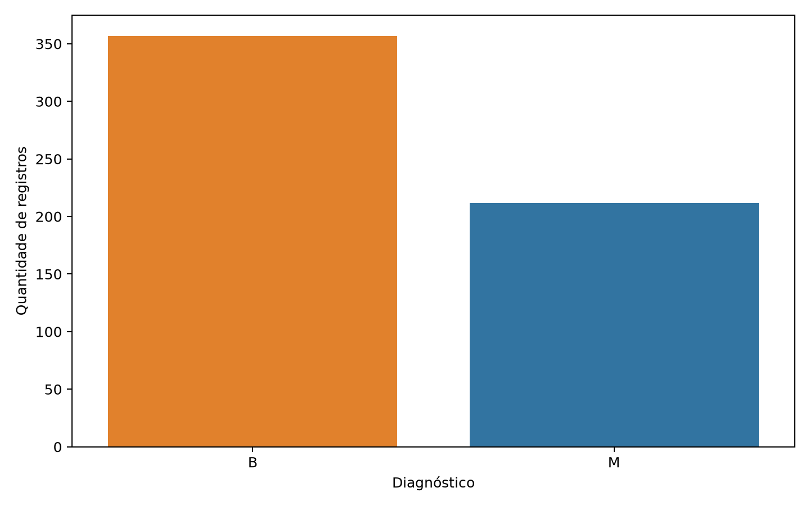
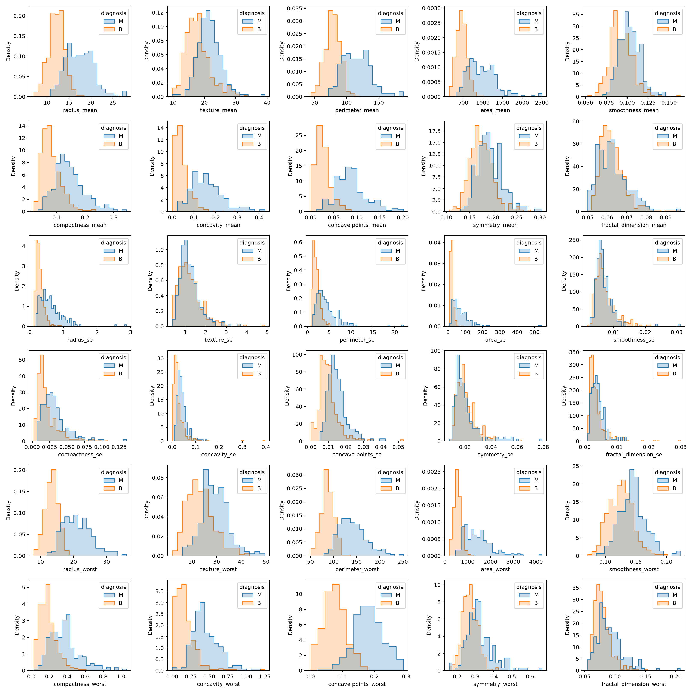
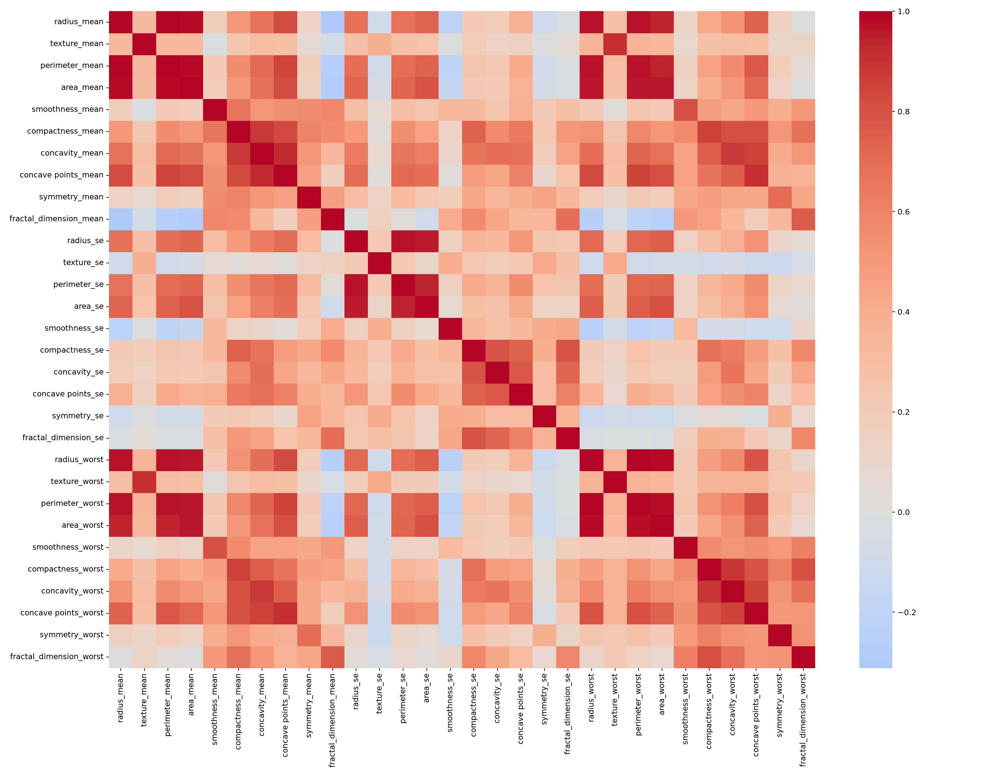
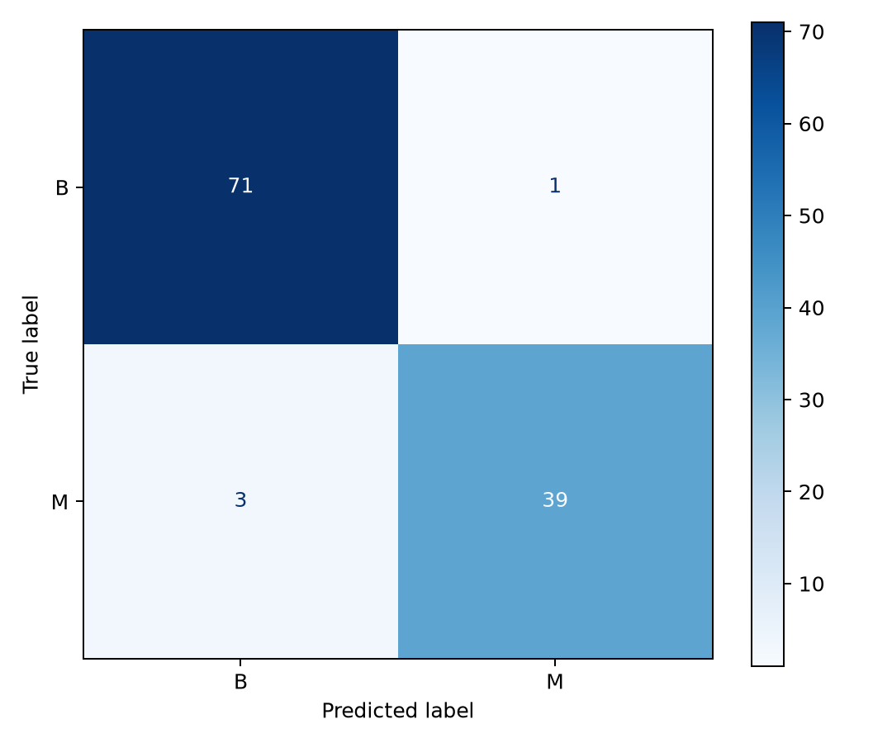
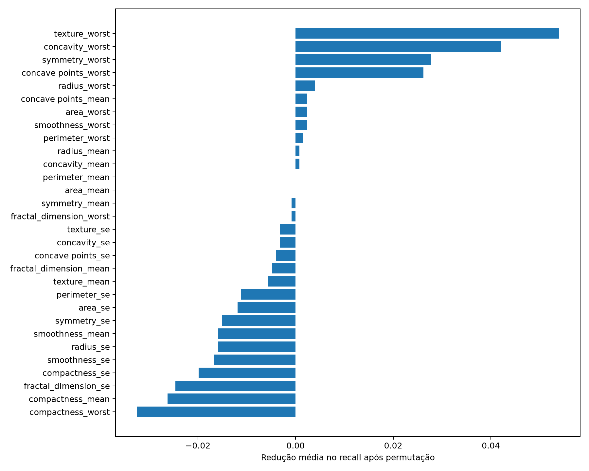
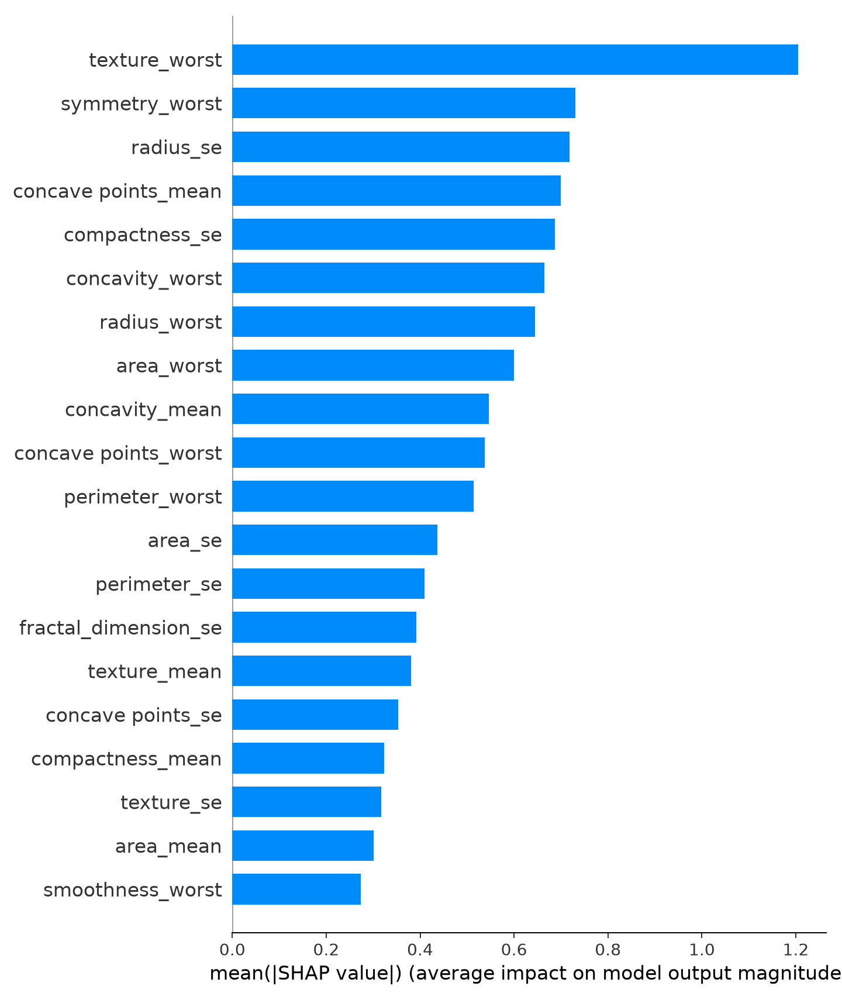

Estudo educacional de apoio à triagem clínica a partir do Breast Cancer Wisconsin Diagnostic Dataset. O modelo não produz diagnóstico e não substitui a decisão de profissionais de saúde.
Este PDF reúne o relatório técnico e o mapa dos artefatos exigidos na Fase 1. O código-fonte, o README, o dataset local e os gráficos reproduzíveis ficam no repositório do projeto.
| Item exigido | Onde está |
|---|---|
| Link do repositório Git | Ainda não há remoto publicado. Após o git push, substitua este campo pela URL pública (GitHub/GitLab). |
| Código-fonte completo | src/iadt_ml/, com testes em tests/ e empacotamento em pyproject.toml. |
| README com instruções de execução | README.md na raiz. Resumo operacional na seção 9 deste relatório. |
| Dockerfile | Não aplicável nesta fase. A execução usa ambiente virtual Python, sem container. |
| Dataset (ou link para download) | Arquivo local data/raw/breast_cancer.csv. Fonte pública: Breast Cancer Wisconsin Diagnostic Dataset. |
| Resultados (prints, gráficos e análises) | reports/figures/, reproduzidos e interpretados nas seções 4, 6 e 7. |
| Relatório técnico | Este documento e a versão em Markdown em reports/technical_report.md. |
O projeto segue Clean Architecture. As regras de negócio não dependem de pandas, scikit-learn ou da CLI. Isso permite trocar a interface ou a persistência sem reescrever a seleção do modelo.
src/iadt_ml/ domain/ entidades e contratos application/ casos de uso (analisar, treinar, explicar) infrastructure/ CSV, scikit-learn, joblib, gráficos e SHAP presentation/ CLI iadt-ml data/raw/ dataset local (não versionado) models/ pipeline serializado reports/figures/ gráficos e tabelas da execução tests/ testes unitários e de integração
Fluxo interno: CLI → caso de uso → porta do domínio → adaptador de infraestrutura. O comando de treino, por exemplo, executa carga do CSV, divisão estratificada, validação cruzada, seleção por recall, avaliação única no teste e persistência do pipeline vencedor.
O sistema classifica registros de exames de câncer de mama como benignos (B) ou malignos (M)
para apoiar a triagem. O resultado é uma estimativa estatística aprendida em dados históricos.
Não é diagnóstico clínico e não substitui a conduta de médicos ou médicas.
Em saúde, deixar de sinalizar um caso maligno pode atrasar a investigação. Por isso, a métrica prioritária de seleção é o recall da classe maligna. F1-score e accuracy entram apenas como critérios de desempate.
Foi utilizado o Breast Cancer Wisconsin Diagnostic Dataset, indicado no enunciado.
A base contém 569 registros e 30 atributos numéricos extraídos de imagens digitalizadas de
aspiração por agulha fina (FNA), além da variável-alvo diagnosis.
Cada núcleo celular é descrito por dez medidas (raio, textura, perímetro, área, suavidade,
compacidade, concavidade, pontos côncavos, simetria e dimensão fractal), nas versões
média (_mean), erro padrão (_se) e pior valor (_worst).
Link para download:
https://www.kaggle.com/datasets/uciml/breast-cancer-wisconsin-data.
O arquivo data.csv deve ser salvo como data/raw/breast_cancer.csv.
O CSV bruto não é versionado no Git, por política de não publicar dados externos sem necessidade.
A análise exploratória antecede o treino. Ela descreve o balanceamento das classes, a escala das
variáveis, a sobreposição entre diagnósticos e a redundância linear entre medidas geométricas.
Os artefatos foram gerados pelo comando iadt-ml analyze e gravados em reports/figures/.
Há 357 registros benignos (62,7%) e 212 malignos (37,3%). O desbalanceamento é moderado, não extremo.
Ainda assim, accuracy isolada seria enganosa: um classificador que previsse apenas benigno acertaria
cerca de 63% dos casos e falharia precisamente na classe que importa para a triagem.
Por isso a validação e a seleção usam recall da classe M, com divisão estratificada
para preservar a proporção em treino e teste.

As escalas diferem bastante. area_mean varia de 143,5 a 2.501, enquanto
smoothness_mean permanece entre 0,05 e 0,16. Modelos lineares com regularização
implícita na solução, como a Regressão Logística, precisam de padronização para que a magnitude
da unidade não domine o coeficiente.
Os histogramas por classe mostram que medidas de tamanho e irregularidade separam melhor
benigno e maligno: radius_mean, perimeter_mean, area_mean,
concave points_mean e os equivalentes _worst deslocam a massa da classe
maligna para valores mais altos. Já smoothness_mean, symmetry_mean,
fractal_dimension_mean e a maior parte dos atributos _se apresentam
forte sobreposição. A assimetria à direita é frequente, o que reforça imputação por mediana
em vez de média caso surjam ausências futuras.

Não há variáveis categóricas a codificar neste recorte: todos os preditores já são numéricos.
A matriz de correlação, porém, revela multicolinearidade estrutural. Raio, perímetro e área
descrevem a mesma geometria do núcleo. A correlação entre radius_mean e
perimeter_mean é aproximadamente 0,998; entre
radius_mean e area_mean, cerca de 0,987.
Médias e piores valores da mesma medida também caminham juntas
(radius_mean e radius_worst ≈ 0,970).
Há um segundo bloco correlacionado em irregularidade:
compactness, concavity e concave points.
Essa redundância não invalida os modelos escolhidos, mas impede ler cada coeficiente da
Regressão Logística como efeito isolado e independente. A Random Forest tolera melhor
colinearidade, porém também não transforma correlação em causalidade clínica.

Na versão utilizada não há valores ausentes nem linhas duplicadas. O identificador id
e a coluna vazia auxiliar (Unnamed: 32) existem no CSV original e são removidos
na carga, porque não descrevem o exame. Qualidade boa da base pública não equivale a
representatividade da população de um hospital específico.
| Artefato da EDA | Arquivo |
|---|---|
| Estatísticas descritivas | descriptive_statistics.csv |
| Resumo da carga | exploratory_summary.json |
| Distribuição das classes | class_distribution.png |
| Distribuições por atributo | feature_distributions.png |
| Mapa de correlação | correlation_heatmap.png |
| Tabela de correlações | feature_correlations.csv |
O pré-processamento pertence ao Pipeline do scikit-learn e é ajustado somente com
o conjunto de treino. O conjunto de teste nunca participa do cálculo de mediana ou de escala.
Isso evita vazamento de informação, equivalente a estudar com o gabarito da prova.
id e colunas auxiliares vazias saem na leitura. Identificadores podem criar
atalhos sem valor clínico e não devem entrar no modelo.
Todos os preditores são convertidos para número. Células ilegíveis viram ausências
(NaN) e só então passam pelo imputador do pipeline.
80% treino e 20% teste, com semente fixa 42. A estratificação preserva a proporção B/M. Na execução atual isso resulta em cerca de 455 registros de treino e 114 de teste.
Ambos os modelos usam SimpleImputer(strategy="median"). A mediana é mais estável
que a média na presença de caudas longas, observadas na EDA. Na base atual não há ausências,
mas o passo permanece para tornar o pipeline robusto a dados futuros incompletos.
A Regressão Logística recebe StandardScaler depois da imputação. Sem isso,
variáveis como área dominariam variáveis como suavidade. A Random Forest não usa scaler:
partições por limiar são invariantes a transformações monotônicas de escala.
Três dobras estratificadas no treino comparam os candidatos. O teste permanece isolado até a avaliação final única do modelo já escolhido.
| Etapa | Regressão Logística | Random Forest |
|---|---|---|
Remoção de id |
Sim | Sim |
| Imputação (mediana) | Sim | Sim |
| Padronização | Sim | Não |
| Ajuste do transformador | Somente treino | Somente treino |
Foram comparados dois classificadores supervisionados, suficientes para a Fase 1 e complementares em hipótese estatística: um linear interpretável e um conjunto não linear.
Baseline linear, estável e relativamente simples de interpretar. Estima a probabilidade de malignidade a partir de uma combinação ponderada dos atributos padronizados. Foi escolhida porque:
Configuração: max_iter=2000, random_state=42, pipeline com
imputação e scaler. Não se espera que capture interações complexas sem engenharia extra.
Conjunto de 400 árvores de decisão. Cada árvore vê uma amostra e um subconjunto de atributos; a floresta agrega os votos. Foi incluída porque:
Dentro do treino, cada candidato passa por validação cruzada estratificada de três dobras. A seleção usa, nesta ordem: maior recall de malignidade, maior F1-score, maior accuracy. O vencedor é reajustado em todo o treino e só então avaliado no teste.
| Modelo | Accuracy (CV) | Recall (CV) | F1 (CV) |
|---|---|---|---|
| Regressão Logística | 0,974 | 0,959 | 0,965 |
| Random Forest | 0,956 | 0,935 | 0,941 |
A Regressão Logística venceu em recall, F1 e accuracy de validação. A hipótese linear, com atributos já bastante discriminativos na EDA, foi suficiente neste recorte. A Random Forest não foi descartada por ser “pior em absoluto”: ela permanece documentada como alternativa, mas não justificava a complexidade extra na métrica prioritária.
A avaliação final usou 114 registros isolados. Esses exemplos não participaram da escolha do algoritmo nem do ajuste dos transformadores, além do que o pipeline aplica na transformação já aprendida no treino.
| Métrica | Resultado | Leitura |
|---|---|---|
| Accuracy | 0,965 | 110 acertos em 114 registros. |
| Recall de malignidade | 0,929 | 39 de 42 malignos foram sinalizados. |
| F1-score de malignidade | 0,951 | Equilíbrio entre identificar malignos e não inflar alarmes. |
| ROC-AUC | 0,996 | Forte capacidade de ordenar as duas classes por probabilidade. |
| Classe real / prevista | Benigno | Maligno |
|---|---|---|
| Benigno | 71 | 1 |
| Maligno | 3 | 39 |

Houve 1 falso positivo e 3 falsos negativos. O falso positivo gera investigação extra, custo aceitável em triagem. Os três falsos negativos são o ponto crítico: casos malignos que o modelo tratou como benignos. Recall de 0,929 é alto para um exercício acadêmico, mas esses três erros bastam para afirmar que o sistema não pode decidir sozinho.
O ROC-AUC próximo de 1 indica boa ordenação das probabilidades, não ausência de erro no limiar padrão 0,5. Um uso real poderia recalibrar o limiar para reduzir falsos negativos, à custa de mais falsos positivos — decisão clínica e operacional, não apenas estatística.
Depois da avaliação, o comando iadt-ml explain descreve o modelo já escolhido.
Essa etapa não retreina nem troca o algoritmo.
A técnica embaralha um atributo por vez no teste e mede a queda do recall. Se o desempenho
cai, aquele atributo era útil para identificar malignidade. Na execução atual destacaram-se
texture_worst, concavity_worst, symmetry_worst e
concave points_worst.
Valores próximos de zero ou negativos não provam que a variável “faz mal” na natureza: com 114 linhas e atributos colineares, a permutação de um preditor redundante pode até parecer neutra. A leitura correta é relativa: textura e irregularidade no pior valor pesaram mais para o recall do que medidas de erro padrão isoladas.

SHAP resume a contribuição média absoluta de cada atributo para a saída do classificador.
texture_worst aparece novamente no topo, seguida de atributos de simetria,
tamanho e pontos côncavos. A convergência entre permutação e SHAP aumenta a confiança
de que a textura no pior valor e marcas de irregularidade guiam o modelo.

Não há Dockerfile nesta fase. O ambiente recomendado é um virtualenv com Python 3.11 ou superior.
python3 -m venv .venv source .venv/bin/activate python -m pip install --upgrade pip python -m pip install -e '.[dev]' # dataset: data/raw/breast_cancer.csv iadt-ml analyze --dataset data/raw/breast_cancer.csv iadt-ml train --dataset data/raw/breast_cancer.csv iadt-ml explain --dataset data/raw/breast_cancer.csv --model models/best_model.joblib pytest ruff check .
Os gráficos saem em reports/figures/. O pipeline vencedor é salvo em
models/best_model.joblib e inclui imputação e scaler, não apenas o classificador.
O desempenho é promissor para um exercício acadêmico com base clássica e bem estudada. Ele não comprova adequação a ambiente hospitalar. Limitações principais:
Um uso real exigiria validação clínica formal, avaliação de viés, controle de versão de dados e modelos, governança de acesso, conformidade com a LGPD e decisão final de profissional habilitado. Este trabalho permanece no escopo educacional de apoio à triagem.
src/iadt_ml e tests.README.md.reports/figures/.